Данный бот создан для проведения квест-игры в пределах детского лагеря отдыха.
Данный бот был написан на таком языке программирования как Python.
Первоначально необходимо создать группу во Вконтакте, где и будет сам бот.
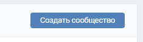
Далее необходимо перейти в управление группы.
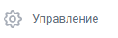
Перейти в раздел сообщения.
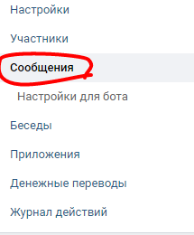
И включить сообщения Сообщества, также при желании написать приветсвие Бота.
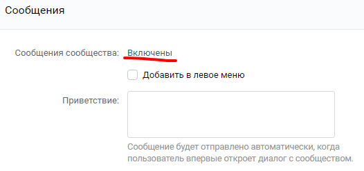
Дальше необходимо перейти в раздел настроек Работа с Api.
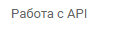
Во вкладке Ключи доступа, нажать на кнопку Создать Ключ,после потребутся подтвердить действия,чтобы получить ключ.
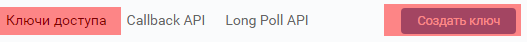
В открывшимся окне поставить везде галочки и разрешить доступ.
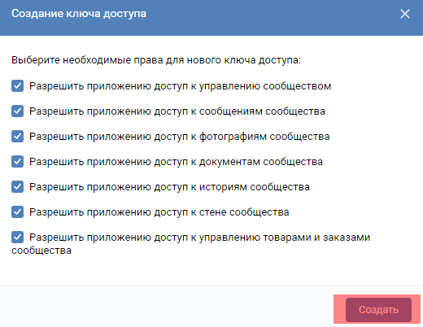
В итоге Вы получаете вот такой большой ключ.(Никому не показывайте этот ключ)
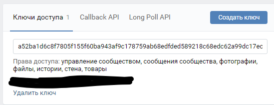
Как только вы получили данный ключ, создали группу и настроили сообщения, то настает время разработки самого Бота.
Создавайте новый файл с расширением Python(Bots.py),запускайте его в своем редакторе кода(Например Sublime Text 3) и начинаем писать код.
Первым делом импортируем необходимые для работы бота Библиотеки
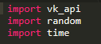
Следующем действием мы вписываем атрибуты библиотеки VK_API.В отделы Token необходимо ввести ключ, который вы получили в группе.
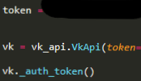
Весь остальной код вы пишите по своим знаниям языка Python, а он выйдет довольно большим.
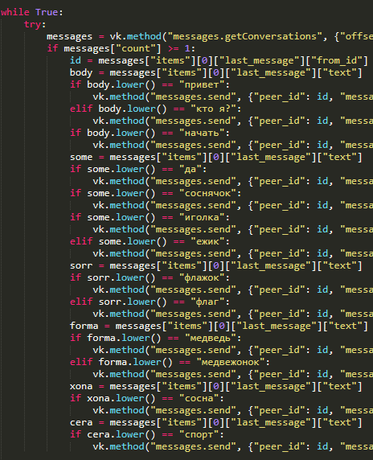
Если вы начнете изучать Python подробнее, то сможете создавать множество других программ и ботов.
Данный Бот и Сайт были созданы Студенческим педагонияеским отрядом "Алые паруса" и вожатыми лагеря "Соснячок".